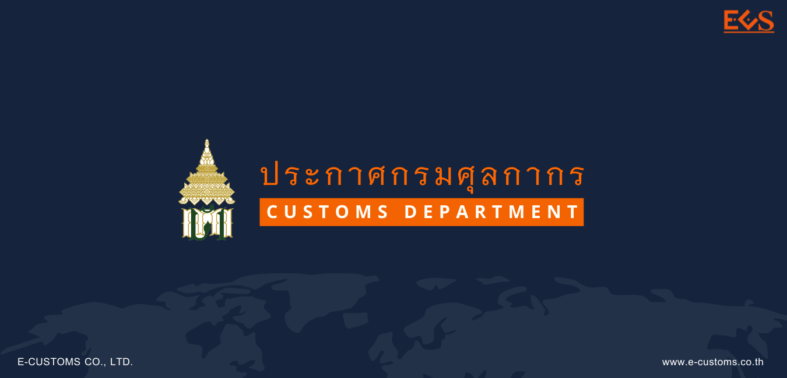

ประกาศกรมศุลกากรที่ 49/.2565 เรื่อง หลักเกณฑ์ วิธีการ และเงื่อนไข การปฏิบัติพิธีการศุลกากรในการยกเว้นอากรศุลกากร สำหรับของที่นําเข้ามาเพื่อผลิตเป็นหน้ากาก มีรายละเอียดที่สำคัญดังนี้
ข้อ 1 กำหนดให้ยกเว้นอากรสำหรับของไม่ว่าจะจัดอยู่ในพิกัดประเภทใดที่นําเข้ามาเพื่อผลิตเป็นหน้ากากชนิดที่ใช้ในห้องผ่าตัด ตามประเภทย่อย 6307.90.40 หน้ากากกรองเชื้อโรค หน้ากากทางการแพทย์นอกจากหน้ากากชนิดที่ใช้ในห้องผ่าตัด และหน้ากากกรองฝุ่น หมอกควัน หรือสารพิษ บรรดาที่เป็นอุปกรณ์เพื่อความปลอดภัยตามประเภทย่อย 6307.90.90 การยกเว้นอากร และการกำหนดให้ของที่ได้รับการยกเว้นอากร ให้เป็นไปตามหลักเกณฑ์ และเงื่อนไข ดังต่อไปนี้
- ของที่ได้รับการยกเว้นอากรจะต้องนําไปใช้ผลิตหน้ากากชนิดที่ใช้ในห้องผ่าตัด ตามประเภทย่อย 6307.90.40 หน้ากากกรองเชื้อโรค หน้ากากทางการแพทย์นอกจากหน้ากากชนิดที่ใช้ ในห้องผ่าตัด และหน้ากากกรองฝุ่น หมอกควัน หรือสารพิษ บรรดาที่เป็นอุปกรณ์เพื่อความปลอดภัย ตามประเภทย่อย 6307.90.90 ภายในกำหนดเวลาหนึ่งปีนับแต่วันที่นําของเข้า หากปรากฏในภายหลังว่า ของที่ได้รับการยกเว้นอากรไม่สามารถหรือมิได้นําไปใช้ผลิต ภายในกำหนดเวลาหนึ่งปีนับแต่วันที่นําของเข้า ผู้นําของเข้าจะต้องชําระอากรตามปกติ หรือส่งของนั้นออกไปนอกราชอาณาจักร หากมีเหตุจำเป็นต้องขยายระยะเวลาให้ขอต่ออธิบดีกรมศุลกากรก่อนครบกำหนดดังกล่าว อธิบดีกรมศุลกากรอาจอนุญาตให้ขยายเวลาได้ไม่เกินหกเดือน
- ผู้ขอใช้สิทธิต้องได้รับอนุมัติจากอธิบดีกรมศุลกากร
ข้อ 2 เพื่อการพิจารณาอนุมัติให้ยกเว้นอากรศุลกากร ให้ผู้นําของเข้ายื่นคําร้องขอยกเว้นอากร พร้อมเอกสารหรือหลักฐาน ดังต่อไปนี้
-
กรณีผู้นําของเข้าเป็นผู้ประกอบการอุตสาหกรรมผลิตหน้ากากชนิดที่ใช้ในห้องผ่าตัด ตามประเภทย่อย 6307.90.40 หน้ากากกรองเชื้อโรค หน้ากากทางการแพทย์นอกจากหน้ากากชนิดที่ใช้ ในห้องผ่าตัด และหน้ากากกรองฝุ่น หมอกควัน หรือสารพิษ บรรดาที่เป็นอุปกรณ์เพื่อความปลอดภัย ตามประเภทย่อย 6307.90.90 ให้ใช้เอกสารหรือหลักฐาน เฉพาะในการนําเข้าครั้งแรกดังต่อไปนี้
- หนังสือรับรองจากกระทรวงอุตสาหกรรม หรือใบรับแจ้งการประกอบกิจการ โรงงานจำพวกที่ 2 (ร.ง. 2) หรือใบอนุญาตประกอบกิจการโรงงาน (ร.ง. 4) หรือหนังสือรับรองการประกอบ กิจการโรงงานในเขตประกอบการอุตสาหกรรมตามมาตรา 30 แห่งพระราชบัญญัติโรงงาน พ.ศ. 2535 (แบบ ข.2) หรือใบแจ้งการประกอบอุตสาหกรรมในนิคมอุตสาหกรรม (กนอ.03/2) หรือหนังสือรับแจ้ง การประกอบอุตสาหกรรม หรือใบอนุญาตให้ใช้ที่ดินและประกอบกิจการในนิคมอุตสาหกรรม (ฉบับต่ออายุ) (กนอ.03/6) ของผู้นําของเข้า
- เอกสารแสดงกำลังการผลิตเต็มที่ของโรงงานต่อปี
- เอกสารแสดงการรับรองตนเองของผู้ประกอบอุตสาหกรรมผลิตหน้ากาก ตามแบบแนบท้ายประกาศนี้ ว่าของที่นําเข้ามาจะนําไปผลิตเป็นหน้ากากชนิดที่ใช้ในห้องผ่าตัดตาม ประเภทย่อย 6307.90.40 หน้ากากกรองเชื้อโรค หน้ากากทางการแพทย์นอกจากหน้ากากชนิดที่ใช้ ในห้องผ่าตัด และหน้ากากกรองฝุ่น หมอกควัน หรือสารพิษ บรรดาที่เป็นอุปกรณ์เพื่อความปลอดภัย ตามประเภทย่อย 6307.90.90 เท่านั้น
-
ในการนําเข้าทุกครั้งให้ยื่นหรือแสดงเอกสารหรือหลักฐาน ดังต่อไปนี้
- เอกสารแสดงรายชื่อและที่อยู่ของผู้ประกอบอุตสาหกรรมผลิตหน้ากากที่เป็นลูกค้า ในการซื้อของที่ขอยกเว้นอากรศุลกากร
- เอกสารแสดงการรับรองตนเองของผู้นําของเข้าตามแบบแนบท้ายประกาศนี้ ว่าของที่นําเข้ามาจะนําไปผลิตเป็นหน้ากากชนิดที่ใช้ในห้องผ่าตัดตามประเภทย่อย 6307.90.40 หน้ากาก กรองเชื้อโรค หน้ากากทางการแพทย์นอกจากหน้ากากชนิดที่ใช้ในห้องผ่าตัดและหน้ากากกรองฝุ่น หมอกควัน หรือสารพิษ บรรดาที่เป็นอุปกรณ์เพื่อความปลอดภัยตามประเภทย่อย 6307.90.90 เท่านั้น
- หนังสือรับรองจากกระทรวงอุตสาหกรรม หรือใบรับแจ้งการประกอบกิจการ โรงงานจำพวกที่ 2 (ร.ง. 2) หรือใบอนุญาตประกอบกิจการโรงงาน (ร.ง. 4) หรือหนังสือรับรองการประกอบกิจการ โรงงานในเขตประกอบการอุตสาหกรรมตามมาตรา 30 แห่งพระราชบัญญัติโรงงาน พ.ศ. 2535 (แบบ ข.2) หรือใบแจ้งการประกอบอุตสาหกรรมในนิคมอุตสาหกรรม (กนอ.03/2) หรือหนังสือรับแจ้งการประกอบ อุตสาหกรรม หรือใบอนุญาตให้ใช้ที่ดินและประกอบกิจการในนิคมอุตสาหกรรม (ฉบับต่ออายุ) (กนอ.03/6) ของผู้ประกอบอุตสาหกรรมผลิตหน้ากาก
- สัญญาซื้อขายหรือเอกสารอื่นใดที่แสดงได้ว่าผู้นําของเข้า นําเข้ามาเพื่อส่งให้ผู้ประกอบอุตสาหกรรมผลิตหน้ากาก
ข้อ 3 ให้ผู้ขอใช้สิทธิยกเว้นอากรดำเนินการ ดังต่อไปนี้
- ให้ผู้ขอใช้สิทธิยื่นคําร้องพร้อมเอกสารหรือหลักฐานประกอบตามที่กำหนดไว้ในข้อ 2 เพื่อขอใช้สิทธิต่อสำนักงานศุลกากร หรือด่านศุลกากร ณ ท่า ที่ หรือสนามบิน ที่นําของเข้าเพื่อประกอบการพิจารณา อนุมัติให้ได้สิทธิยกเว้นอากรศุลกากร กรณีผู้ขอใช้สิทธิยื่นคําร้องหรือเอกสารไม่ถูกต้อง หรือไม่ครบถ้วน กรมศุลกากรจะมี หนังสือแจ้งให้ผู้ขอใช้สิทธิทราบภายในเจ็ดวันนับแต่วันที่ได้รับคําร้อง และให้ผู้ขอใช้สิทธิยื่นหนังสือหรือเอกสาร เพิ่มเติมให้ถูกต้องครบถ้วนภายในเจ็ดวันนับแต่วันที่ได้รับหนังสือแจ้ง
- กรมศุลกากรจะมีหนังสือแจ้งเลขที่อนุมัติหลักการ (Permit Number) ให้ผู้ขอใช้สิทธิทราบพร้อมแนบสำเนาเอกสารการอนุมัติหลักการ ซึ่งพิมพ์จากระบบฐานข้อมูลการลดอัตราอากร และยกเว้นอากรศุลกากรตามมาตรา 12 ภายในสิบห้าวันทำการนับแต่วันที่ได้รับคําร้องพร้อมเอกสารถูกต้อง ครบถ้วน หากไม่อนุมัติหลักการกรมศุลกากรจะมีหนังสือแจ้งเหตุผลการไม่อนุมัติให้ทราบ
- กรณีผู้ได้รับอนุมัติหลักการยื่นคําร้องขอแก้ไขเพิ่มเติม หรือยกเลิกการได้รับอนุมัติหลักการเดิม ให้ยื่นคําร้องพร้อมเอกสารประกอบตามที่กำหนดไว้ในเรื่องนั้น เพื่อประกอบการพิจารณาให้ครบถ้วน กรณีเป็นการเปลี่ยนแปลงเกี่ยวกับชนิดสินค้าที่นําเข้า ให้ยื่นคําร้องล่วงหน้าก่อนการนําเข้า ที่สำนักงานศุลกากร หรือด่านศุลกากร ณ ท่า ที่ หรือสนามบินแห่งหนึ่งแห่งใดก็ได้ หากยังไม่ได้รับอนุมัติให้แก้ไขเปลี่ยนแปลง ต้องดำเนินการตามข้อ 5 ไปก่อน กรณียื่นคําร้องหรือเอกสารไม่ถูกต้องหรือไม่ครบถ้วน กรมศุลกากรจะมีหนังสือแจ้ง ให้ผู้ได้รับอนุมัติหลักการทราบภายในเจ็ดวันนับแต่วันที่ได้รับคําร้อง และให้ผู้ได้รับอนุมัติหลักการยื่นหนังสือ หรือเอกสารเพิ่มเติมให้ถูกต้องครบถ้วนภายในเจ็ดวันนับแต่วันที่ได้รับหนังสือแจ้ง
- กรมศุลกากรจะมีหนังสือแจ้งผลการพิจารณาการขอแก้ไขเพิ่มเติมหลักการ ที่ได้รับอนุมัติไว้เดิมให้แก่ผู้ยื่นคําร้องทราบภายในสามสิบวันนับแต่วันที่ได้รับคําร้องและเอกสารถูกต้องครบถ้วน โดยการขอแก้ไขเพิ่มเติมดังกล่าว จะออกเลขที่อนุมัติหลักการใหม่พร้อมแนบสำเนาเอกสารการอนุมัติหลักการ ซึ่งพิมพ์จากระบบฐานข้อมูลการลดอัตราอากรและยกเว้นอากรตามมาตรา 12 หากเป็นการยื่นขอแก้ไขเพิ่มเติมความคลาดเคลื่อนเกี่ยวกับข้อมูลอนุมัติ วันเริ่มต้นการได้รับสิทธิและวันหมดอายุการใช้สิทธิ จะใช้เลขที่อนุมัติหลักการเดิม โดยมีการแก้ไขข้อมูลวันเริ่มต้น การได้รับสิทธิและวันหมดอายุให้ถูกต้องเท่านั้น
ข้อ 4 ให้ผู้นําของเข้าจัดทำข้อมูลใบขนสินค้าขาเข้าตามมาตรฐานที่กรมศุลกากรกำหนด โดยบันทึกในช่องสิทธิพิเศษของแต่ละรายการระบุเป็น “CV7” และบันทึกข้อมูล (Import Declaration Detail (Permit) ดังนี้
- ระบุเลขที่อนุมัติหลักการยกเว้นอากรในช่องเลขที่ใบอนุญาต/หนังสือรับรอง (Permit No.)
- ระบุวันที่ได้รับอนุมัติหลักการ ในช่องวันที่ออกใบอนุญาต/หนังสือรับรอง (Issue Date)
- ระบุเลขประจำตัวผู้เสียภาษีอากรของกรมศุลกากร (0944000163011) ในช่องเลขประจำตัวผู้เสียภาษีอากรของหน่วยงานผู้ออกใบอนุญาต/หนังสือรับรอง (Permit Issue Authority)
ข้อ 5 การขอรับของออกไปก่อนที่จะได้รับอนุมัติให้ยกเว้นอากร ให้ผู้นําของเข้าดำเนินการดังนี้
- ให้ชําระอากรในอัตราปกติ โดยในแต่ละรายการของข้อมูลใบขนสินค้าขาเข้าในช่องสิทธิพิเศษให้ระบุเป็น “000” หรือ “999” แล้วแต่กรณี
- ระบุการใช้สิทธิ โดยบันทึกข้อมูลในส่วนรายการของใบขนสินค้าขาเข้า (Import Declaration Detail (Detail) ในช่อง Argumentative Reason Code เป็น “P12” (หมายถึง การยื่น ขอใช้สิทธิลดอัตราอากรและยกเว้นอากรศุลกากรตามมาตรา 12 แห่งพระราชกำหนดพิกัดอัตราศุลกากร พ.ศ. 2530 แต่ยังไม่ได้รับอนุมัติ) และในช่อง Argumentative Privilege Code ที่ขอใช้สิทธิ เป็น “CV7”
- ให้แจ้งความประสงค์ขอตรวจสอบพิกัดและ/หรือราคา ในขณะส่งข้อมูลใบขนสินค้าขาเข้า เข้าสู่ระบบคอมพิวเตอร์ของศุลกากร
- ต้องยื่นคําร้องในการขอคืนอากรภายในระยะเวลาที่กฎหมายกำหนด
ข้อ 8 ภายหลังจากที่ได้รับการตรวจปล่อยไปจากอารักขาของศุลกากรแล้ว เช่น การขอขยายระยะเวลาการใช้วัตถุดิบ การขอส่งของกลับออกไปนอกราชอาณาจักร หรือการขอชําระค่าภาษีอากร ให้ผู้นําของเข้ายื่นคําร้อง ณ สำนักงานศุลกากรหรือด่านศุลกากรที่รับผิดชอบก่อนครบกำหนดระยะเวลาหนึ่งปีนับแต่วันที่นําของเข้า พร้อมทั้งยื่นบัญชีแสดงรายการแห่งของที่ขอดำเนินการ เช่น รายละเอียดวันที่นําของเข้า เลขที่ใบขนสินค้าขาเข้า เลขที่บัญชีราคาสินค้า ปริมาณที่นําเข้า ปริมาณคงเหลือ เป็นต้น และเอกสารหรือหลักฐานต่าง ๆ เพื่อให้พนักงานศุลกากรตรวจสอบ
- กรณีส่งของกลับออกไปนอกราชอาณาจักร ให้นําพนักงานศุลกากรของสำนักงานหรือด่านศุลกากรที่พิจารณาคําร้อง ไปทำการตรวจ หรือควบคุม และชําระค่าธรรมเนียม และค่าใช้จ่าย (ถ้ามี) ตามที่กำหนดไว้ เมื่อส่งของตามที่ได้รับอนุมัติกลับออกนอกราชอาณาจักรแล้ว ให้แจ้งเลขที่ใบขนสินค้าขาออกให้พนักงานศุลกากรผู้ตรวจสอบทราบด้วย
- กรณีขอชําระค่าภาษีอากร หากข้อมูลรายละเอียดการนําเข้าไม่ได้รับสิทธิยกเว้นอากรศุลกากรตามหลักเกณฑ์ วิธีการ และเงื่อนไขที่กำหนดไว้ในประกาศกระทรวงการคลัง เรื่อง การยกเว้นอากรศุลกากรสำหรับของที่นําเข้า มาเพื่อผลิตเป็นหน้ากาก (ฉบับที่ 4) ลงวันที่ 21 มีนาคม พ.ศ. 2504 และระเบียบพิธีการศุลกากร กรมศุลกากรจะเรียก เก็บค่าภาษีอากร ค่าใช้จ่าย (ถ้ามี) และเงินเพิ่มให้ครบถ้วน ตามระเบียบปฏิบัติปกติของพิธีการทั่วไป
- กรณีขอขยายระยะเวลาการใช้วัตถุดิบ อธิบดีกรมศุลกากรอาจอนุญาต ให้ขยายระยะเวลาได้ไม่เกินหกเดือน
ข้อ 10 ประกาศนี้ให้ใช้บังคับตั้งแต่วันที่ 1 เมษายน 2565 เป็นต้นไป
ที่มา : กรมศุลกากร